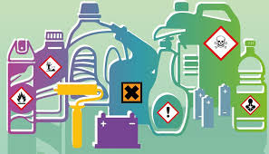

Encuesta sobre Elementos Químicos Dañinos

1. ¿Cuál de los siguientes elementos es conocido por causar daños neurológicos graves?
Arsénico
Mercurio
Plomo
2. ¿Qué elemento químico es conocido por su presencia en baterías y su potencial toxicidad?
Cadmio
Mercurio
Cloro
3. ¿Qué elemento se encuentra en pinturas viejas y puede causar daños graves en el sistema nervioso?
Plomo
Tálio
Fluor
4. ¿Cuál de los siguientes elementos puede causar problemas respiratorios si se inhalan sus partículas?
Asbesto
Cloro
Cromo
5. ¿Qué efecto puede tener la exposición prolongada al arsénico en el organismo?
Cáncer de piel y problemas gastrointestinales
Leucemia
Problemas respiratorios
6. ¿Cuál de estos elementos es utilizado en la industria de recubrimientos metálicos y puede causar cáncer pulmonar?
Benceno
Cromo
Tálio
7. ¿Qué elemento es conocido por su uso en desinfectantes y productos de limpieza, y puede causar irritaciones en altas concentraciones?
Cloro
Fluor
Cadmio
8. ¿Qué elemento se encuentra en baterías y pigmentos, y es conocido por su toxicidad crónica?
Cadmio
Tálio
Arsénico
9. ¿Cuál es la principal fuente de exposición al mercurio para la mayoría de las personas?
Pinturas
Alimentos contaminados
Consumo de pescado
10. ¿Qué medida preventiva es importante para reducir la exposición al asbesto?
Uso de equipos de protección durante la remoción
Uso de desinfectantes
Consumo de pescado
Enviar Encuesta
REGRESAR